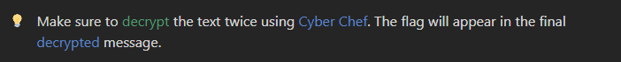
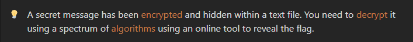

Xploit
HomeProblem Statement:
In this challenge, you are tasked with decrypting a given text file. The text file contains encrypted content that you need to decrypt twice using an online tool to discover the hidden flag.
Scenario:
Objective:
- Download the Text File: Obtain the provided text file and copy its content.
- Use CyberChef for Decryption: Head over to CyberChef, paste the copied content, and decrypt the text twice using the appropriate decryption methods.
- Submit the Flag: After decrypting the message, extract the flag and submit it to complete the challenge.
Skills Required:
- Cryptography: Familiarity with basic cryptographic methods and decryption tools.
- CyberChef: Ability to use CyberChef for text manipulation and decryption.
- File Analysis: Experience in working with encrypted files and uncovering hidden messages.
Hint:
On accessing CyberChef you will be greeted with this console, thhe console is divided into 4 parts namely:
- Operations
- Recipe
- Input
- Output

Here the Operations tab has a variety of both encryptions and decryption algorithms that can be used to encode or decode the data, you can use this by simply dragiing and dropping the required algorithm into the Recipe section.

Once you have added the algorithms in the Recipe section you can now enter the "password" in the Input section and click on "Bake".

Conclusion:
This challenge focuses on basic cryptographic techniques, challenging you to decrypt a hidden message from a text file. Cryptography is a vital skill in cybersecurity, and this exercise will test your ability to use tools like CyberChef to solve encryption puzzles.